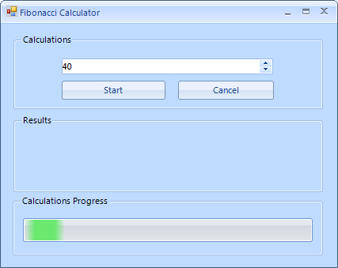
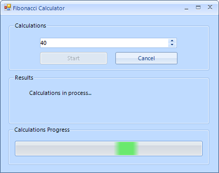
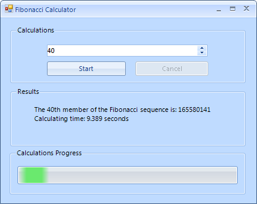

Using WaitingBar with a Background Worker
RadWaitingBar is a useful control for indicating that a long-running operation is
undergoing. When using this control, however, many users face a similar issue:
once the time-consuming operation is started, the control does not move its
indicators and literally freezes. Such cases occur when the long-running operation
is executed on the same thread as the RadWaitingBar waiting process: the primary UI Thread.
The operation does not allow the form to update its UI and as a result the control does
not perform any waiting animation.
One obvious solution is to start the time-consuming operation in a new thread.
The following example illustrates how to achieve this through a BackgroundWorker.
BackgroundWorker solution
The aim of the sample application is to calculate numbers of the Fibonacci sequence. In a straight-forward scenario, the user selects the position of the Fibonacci number through a RadSpinEditor and clicks the Start RadButton to trigger the time-consuming operation. While the calculations are undergoing the RadWaitingBar smoothly animates its waiting indicators and the RadForm remains responsive. Once the number is calculated, the result is displayed and the RadWaitingBar control is stopped.
Below you will find snippets and comments which provide a detailed description of the sample application. Also, feel free to download the example project files appearing at the end of this tutorial.

When the form is loaded the BackgroundWorker instance should be initialized. Additionally, you should subscribe to two of its events: DoWork() and RunWorkerCompleted().
[C#]
private void Form1_Load(object sender, EventArgs e)
{
myBackgroundWorker = new BackgroundWorker();
myBackgroundWorker.WorkerReportsProgress = true;
myBackgroundWorker.WorkerSupportsCancellation = true;
myBackgroundWorker.DoWork += new DoWorkEventHandler(myBackgroundWorker1_DoWork);
myBackgroundWorker.RunWorkerCompleted += new RunWorkerCompletedEventHandler(myBackgroundWorker1_RunWorkerCompleted);
}
[VB.NET]
Private Sub Form1_Load(ByVal sender As Object, ByVal e As EventArgs)
myBackgroundWorker = New BackgroundWorker()
myBackgroundWorker.WorkerReportsProgress = True
myBackgroundWorker.WorkerSupportsCancellation = True
AddHandler myBackgroundWorker.DoWork, AddressOf myBackgroundWorker1_DoWork
AddHandler myBackgroundWorker.RunWorkerCompleted, AddressOf myBackgroundWorker1_RunWorkerCompleted
End Sub
'#End Region
'#region workCompleted
Private Sub myBackgroundWorker1_RunWorkerCompleted(ByVal sender As Object, ByVal e As RunWorkerCompletedEventArgs)
Me.radWaitingBar1.StopWaiting()
Me.radWaitingBar1.ResetWaiting()
Me.radButton1.Enabled = True
Me.radButton2.Enabled = False
[end] = Date.Now
If (e.Cancelled = True) Then
Me.radLabel1.Text = "Calculations are canceled!"
ElseIf Not (e.Error Is Nothing) Then
Me.radLabel1.Text = ("Error: " & e.Error.Message)
Else
Me.radLabel1.Text = "The " & Me.radSpinEditor1.Value.ToString() & "th member of the Fibonacci sequence is: " & e.Result.ToString()
Dim span As New TimeSpan()
span = [end].Subtract(begin)
Me.radLabel1.Text += vbLf & "Calculating time: " & span.TotalSeconds & " seconds"
End If
End Sub
When the user clicks the Start RadButton, you should run the BackgroundWorker through the RunWorkerAsync() method and, also, start the RadWaitingBar waiting process using the StartWaiting() method.
[C#]
private void radButton1_Click(object sender, EventArgs e)
{
if (!myBackgroundWorker.IsBusy)
{
myBackgroundWorker.RunWorkerAsync(radSpinEditor1.Value);
this.radButton1.Enabled = false;
this.radButton2.Enabled = true;
this.radWaitingBar1.StartWaiting();
begin = DateTime.Now;
this.radLabel1.Text = "Calculations in process...";
}
}
[VB.NET]
Private Sub radButton1_Click(ByVal sender As Object, ByVal e As EventArgs)
If Not myBackgroundWorker.IsBusy Then
myBackgroundWorker.RunWorkerAsync(radSpinEditor1.Value)
Me.radButton1.Enabled = False
Me.radButton2.Enabled = True
Me.radWaitingBar1.StartWaiting()
begin = Date.Now
Me.radLabel1.Text = "Calculations in process..."
End If
End Sub

In the DoWork event handler you should execute the time-consuming operation, i.e. calculate the required Fibonacci number.
[C#]
void myBackgroundWorker1_DoWork(object sender, DoWorkEventArgs e)
{
BackgroundWorker worker = sender as BackgroundWorker;
int n = Convert.ToInt32(e.Argument);
e.Result = PerformComplexComputations(n, worker, e);
}
private long PerformComplexComputations(int n, BackgroundWorker worker, DoWorkEventArgs e)
{
long result = 0;
if (worker.CancellationPending)
{
e.Cancel = true;
}
else
{
if (n < 2) return 1;
result = PerformComplexComputations(n - 1, worker, e) + PerformComplexComputations(n - 2, worker, e);
}
return result;
}
[VB.NET]
Private Sub myBackgroundWorker1_DoWork(ByVal sender As Object, ByVal e As DoWorkEventArgs)
Dim worker As BackgroundWorker = TryCast(sender, BackgroundWorker)
Dim n As Integer = Convert.ToInt32(e.Argument)
e.Result = PerformComplexComputations(n, worker, e)
End Sub
Private Function PerformComplexComputations(ByVal n As Integer, ByVal worker As BackgroundWorker, ByVal e As DoWorkEventArgs) As Long
Dim result As Long = 0
If worker.CancellationPending Then
e.Cancel = True
Else
If n < 2 Then
Return 1
End If
result = PerformComplexComputations(n - 1, worker, e) + PerformComplexComputations(n - 2, worker, e)
End If
Return result
End Function
When the long-running operation has completed, you should stop the RadWaitingBar control waiting process through the StopWaiting() method. Additionally, you should display the result to the user.
[C#]
void myBackgroundWorker1_RunWorkerCompleted(object sender, RunWorkerCompletedEventArgs e)
{
this.radWaitingBar1.StopWaiting();
this.radWaitingBar1.ResetWaiting();
this.radButton1.Enabled = true;
this.radButton2.Enabled = false;
end = DateTime.Now;
if ((e.Cancelled == true))
{
this.radLabel1.Text = "Calculations are canceled!";
}
else if (!(e.Error == null))
{
this.radLabel1.Text = ("Error: " + e.Error.Message);
}
else
{
this.radLabel1.Text = "The " + this.radSpinEditor1.Value.ToString() + "th member of the Fibonacci sequence is: " + e.Result.ToString();
TimeSpan span = new TimeSpan();
span = end - begin;
this.radLabel1.Text += "\nCalculating time: " + span.TotalSeconds + " seconds";
}
}
[VB.NET]
Private Sub myBackgroundWorker1_RunWorkerCompleted(ByVal sender As Object, ByVal e As RunWorkerCompletedEventArgs)
Me.radWaitingBar1.StopWaiting()
Me.radWaitingBar1.ResetWaiting()
Me.radButton1.Enabled = True
Me.radButton2.Enabled = False
[end] = Date.Now
If (e.Cancelled = True) Then
Me.radLabel1.Text = "Calculations are canceled!"
ElseIf Not (e.Error Is Nothing) Then
Me.radLabel1.Text = ("Error: " & e.Error.Message)
Else
Me.radLabel1.Text = "The " & Me.radSpinEditor1.Value.ToString() & "th member of the Fibonacci sequence is: " & e.Result.ToString()
Dim span As New TimeSpan()
span = [end].Subtract(begin)
Me.radLabel1.Text += vbLf & "Calculating time: " & span.TotalSeconds & " seconds"
End If
End Sub
